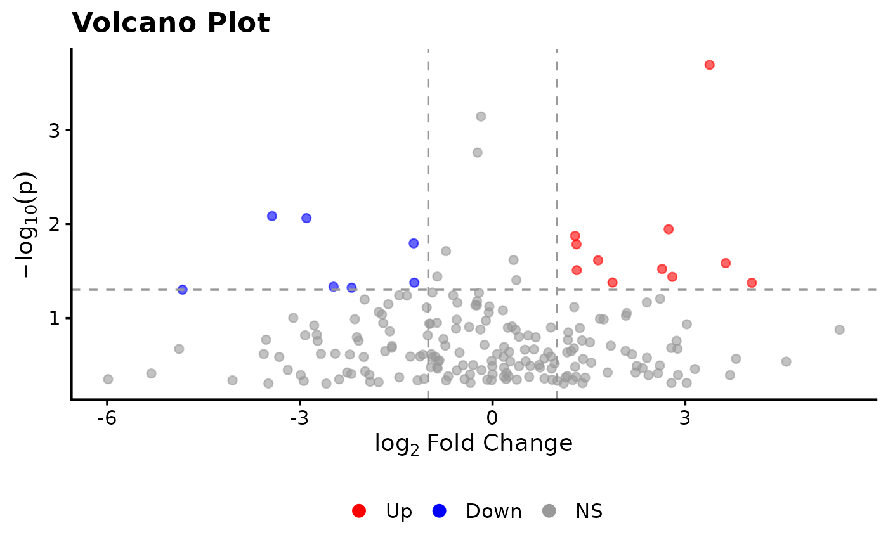
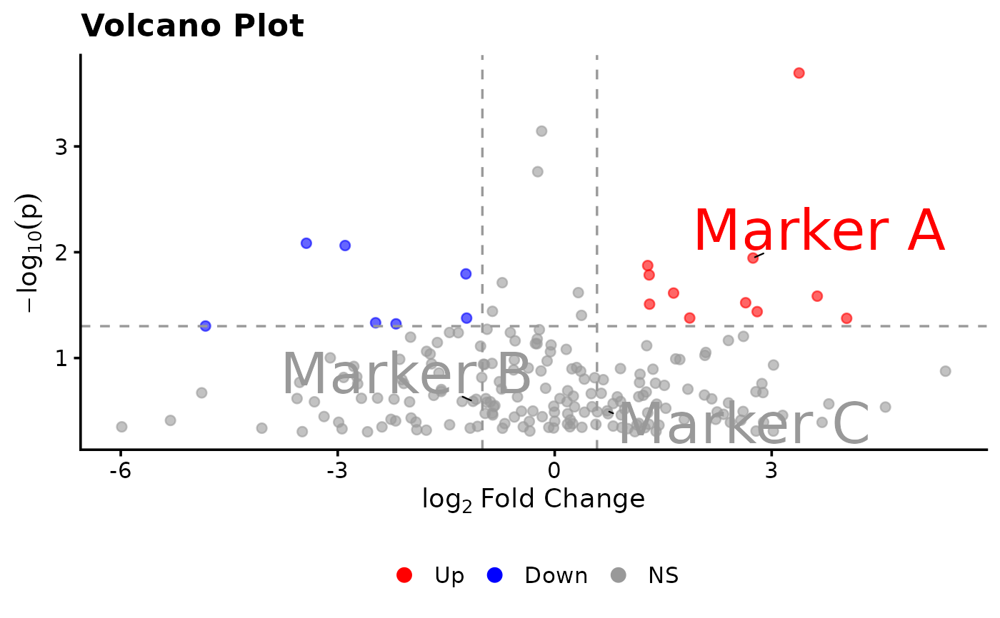
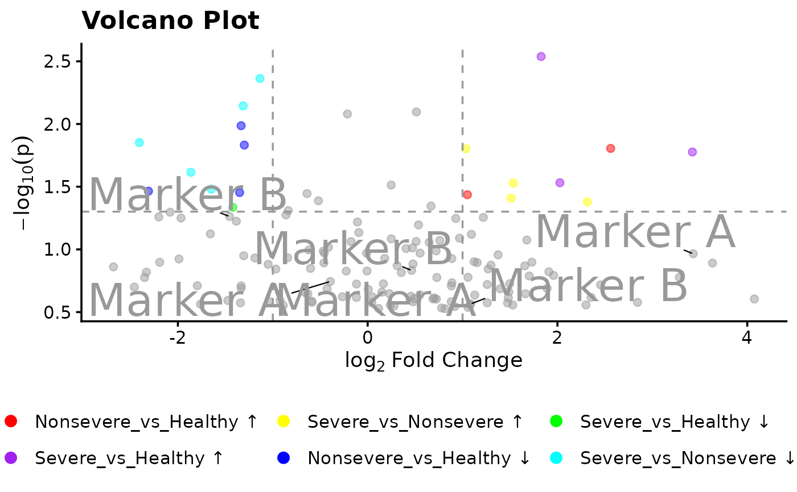

Volcano Plot for Fold Change and P-value Data
plot_volcano.RdGenerates publication-quality volcano plots that visualise differential
features as a scatter of log2 fold change (x-axis) versus statistical
significance (y-axis). Designed to integrate directly with the output of
run_foldchange() and run_diff(), but accepts any
data.frame with the required columns. When group is supplied,
all comparisons are overlaid on a single plot with distinct colours per
group, saving publication space.
Usage
plot_volcano(
x,
y,
z,
group = NULL,
features = NULL,
up = 1,
down = -1,
pval = 0.05,
annotate = NULL,
use_ggrepel = TRUE,
up_color = c("red", "purple", "yellow"),
down_color = c("blue", "green", "cyan"),
ns_color = "grey60",
neglog10 = TRUE,
h_color = NULL,
v_color = NULL,
size = 2,
alpha = 0.6,
theme = "nature",
plot_title = NULL,
plot_subtitle = NULL,
xlab = NULL,
ylab = NULL,
global_font_size = 14,
title_size = NULL,
subtitle_size = NULL,
xlab_size = NULL,
ylab_size = NULL,
axis_text_size = NULL,
label_size = NULL,
legend_size = NULL,
legend_title = NULL,
legend_nrow = NULL,
...
)Arguments
- x
A
data.frame,tibble, or namedmatrixwith one row per feature. Must contain the columns named byyandz. Column names may contain special characters.- y
A single character string naming the column in
xthat contains log2 fold change values (numeric).- z
A single character string naming the column in
xthat contains raw p-values (numeric, in \([0, 1]\)).- group
An optional single character string naming the column in
xthat identifies the comparison group each row belongs to (e.g."Severe_vs_Healthy"). When supplied, all groups are overlaid on one plot and coloured by group. DefaultNULL.- features
A single character string naming the column in
xthat contains the feature identifiers. Required whenannotateis notNULL.- up
A single numeric value. Features with \(\text{log2FC} \ge \text{up}\) and \(p < \text{pval}\) are coloured as up-regulated. Default
1.- down
A single numeric value. Features with \(\text{log2FC} \le \text{down}\) and \(p < \text{pval}\) are coloured as down-regulated. Typically negative (e.g.
log2(0.5)=-1). Default-1.- pval
A single numeric value in \((0, 1]\). Default
0.05.- annotate
An optional vector of feature identifiers to label on the plot. Values must be found in the column specified by
features. May be a plain character vector (labels shown as-is) or a named character vector created withsetNames(feature_ids, display_names), in which case the display names are shown on the plot. A line segment always connects each label to its corresponding point. DefaultNULL.- use_ggrepel
Logical. If
TRUE(default), usesggrepel::geom_text_repel()for non-overlapping labels with connector segments. IfFALSE, usesggplot2::geom_text().- up_color
Character vector of colours for up-regulated points. When
groupisNULLonly the first element is used (default"red"). Whengroupis supplied, one colour per group level is used; if fewer colours than levels are provided they are recycled with a warning. Defaultc("red", "purple", "yellow").- down_color
Character vector of colours for down-regulated points. Same recycling behaviour as
up_color. Defaultc("blue", "green", "cyan").- ns_color
Colour for non-significant points. Default
"grey60".- neglog10
Logical. If
TRUE(default), the y-axis shows \(-\log_{10}(p)\); ifFALSE, raw p-values are plotted with an inverted y-axis.- h_color
Colour of the horizontal significance threshold line. Default
NULLinheritsns_color.- v_color
Colour(s) of the vertical fold-change threshold lines. A single string colours both lines; a two-element vector colours the
downline first and theupline second. DefaultNULLinheritsns_color.- size
A single positive numeric value controlling the point size. Default
2.- alpha
A single numeric value in \((0, 1]\) controlling point transparency. Overlapping points appear darker due to additive blending. Default
0.6.- theme
A single string specifying the ggplot2 theme. One of
"nature"(default),"minimal","bw","classic","plos","gray","light","dark".- plot_title
Character string or
NULL. DefaultNULLgenerates an automatic title.- plot_subtitle
Character string or
NULL. DefaultNULL.- xlab
Character string or
NULL. DefaultNULLuses"log2 Fold Change".- ylab
Character string or
NULL. DefaultNULLuses"-log10(p-value)"or"p-value".- global_font_size
A positive numeric value setting the base font size for all text elements. Default
14.- title_size
Override for title font size. Default
NULL.- subtitle_size
Override for subtitle font size. Default
NULL.- xlab_size
Override for x-axis label font size. Default
NULL.- ylab_size
Override for y-axis label font size. Default
NULL.- axis_text_size
Override for axis tick label font size. Default
NULL.- label_size
Font size for point annotation labels. Default
NULL(derived fromglobal_font_sizeat \(0.75\times\)).- legend_size
Font size for legend text. Respects
global_font_size(\(0.85\times\)) whenNULL. DefaultNULL.- legend_title
A single character string for the legend title. Default
NULL(no legend title shown).- legend_nrow
A single positive integer controlling the number of rows in the bottom legend. Default
NULL(automatic).- ...
Additional arguments forwarded to
ggrepel::geom_text_repel()orggplot2::geom_text().
Value
A named list of class "plot_volcano" with elements:
plotsA named list of
ggplotobjects.classifiedA
data.frameidentical toxwith an additional column.regulation("Up","Down", or"NS").paramsA list of all resolved parameter values.
Examples
## -----------------------------------------------------------------------
## Example 1 — minimal synthetic data, no group
## -----------------------------------------------------------------------
set.seed(42)
n <- 200
dat <- data.frame(
feature = paste0("feat_", seq_len(n)),
log2fc = rnorm(n, 0, 2),
pvalue = runif(n, 0, 0.5)
)
res <- plot_volcano(x = dat, y = "log2fc", z = "pvalue")
print(res$plots[[1]])

## -----------------------------------------------------------------------
## Example 2 — asymmetric thresholds using log2() directly, with labels
## -----------------------------------------------------------------------
ann <- setNames(c("feat_1", "feat_2", "feat_3"),
c("Marker A", "Marker B", "Marker C"))
res2 <- plot_volcano(
x = dat,
y = "log2fc",
z = "pvalue",
features = "feature",
up = log2(1.5),
down = log2(0.5),
annotate = ann
)
print(res2$plots[[1]])

## -----------------------------------------------------------------------
## Example 3 — multi-group overlay
## -----------------------------------------------------------------------
set.seed(7)
dat_multi <- data.frame(
feature = rep(paste0("feat_", seq_len(50)), 3),
log2fc = rnorm(150, 0, 1.5),
pvalue = runif(150, 0, 0.3),
comparison = rep(c("Severe_vs_Healthy", "Nonsevere_vs_Healthy",
"Severe_vs_Nonsevere"), each = 50)
)
res3 <- plot_volcano(
x = dat_multi,
y = "log2fc",
z = "pvalue",
group = "comparison",
features = "feature",
annotate = setNames(c("feat_1", "feat_5"), c("Marker A", "Marker B")),
alpha = 0.5,
legend_nrow = 2
)
print(res3$plots[[1]])
